⚡ Modifiers Introduction
Get ready to supercharge your modeling workflow! Modifiers are like magic filters that automatically transform your geometry without permanently changing it. They're one of Blender's most powerful features, letting you create complex effects with just a few clicks. In this lesson, you'll learn how to use modifiers to work smarter, not harder, and create things that would take hours to do manually.
🎯 Learning Objectives
- Understand what modifiers are and why they're essential for efficient modeling
- Master the modifier workflow - adding, adjusting, and applying modifiers
- Use Array Modifier to duplicate objects in patterns
- Create perfect symmetry with the Mirror Modifier
- Smooth models elegantly using Subdivision Surface
- Round edges automatically with the Bevel Modifier
- Combine multiple modifiers to create complex effects
⏱️ Estimated Time: 50-65 minutes
🎨 Project: Create a decorative fence using modifier stacking
In This Lesson
What Are Modifiers?
Imagine if you could tell Blender: "Make this object smooth" or "Duplicate this 100 times in a circle" and it just... does it. That's what modifiers do. They're automated operations that change your geometry in powerful ways, but here's the magic: they don't permanently alter your original model.
💡 The Photo Filter Analogy: Think of modifiers like Instagram filters. When you apply a filter to a photo, the original image isn't destroyed—you can always turn the filter off or adjust its strength. Modifiers work the same way in 3D modeling. You can tweak them, turn them off, or delete them at any time without losing your base geometry.
Why Modifiers Are Game-Changing
Before modifiers existed, 3D artists had to do everything manually. Want to create a smooth sphere? You'd manually subdivide faces and adjust thousands of vertices. Want 50 identical fence posts? You'd manually duplicate and position each one. Modifiers automate all of this.
🚀 What Modifiers Give You
- Speed: Tasks that took hours now take seconds
- Flexibility: Change your mind anytime without starting over
- Non-destructive workflow: Your original geometry stays safe
- Procedural control: Adjust numbers instead of moving vertices manually
- Consistency: Perfect symmetry and patterns every time
- Learning curve reduction: Complex effects become accessible to beginners
The Two Types of Modifiers
Blender has dozens of modifiers, but they fall into two main categories:
📊 Modifier Categories
| Category | What They Do | Examples |
|---|---|---|
| Generate Modifiers | Add new geometry or change structure | Array, Mirror, Subdivision Surface, Bevel |
| Deform Modifiers | Bend, twist, or reshape existing geometry | Bend, Wave, Lattice, Simple Deform |
In this lesson, we're focusing on the most essential Generate modifiers—the ones you'll use constantly in your modeling workflow.
Real-World Modifier Examples
Let's look at what modifiers can do in practice:
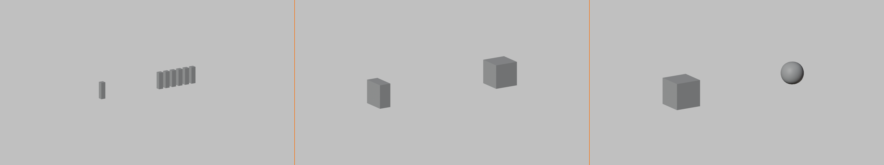
✅ Common Uses for Modifiers
Here are real scenarios where modifiers save massive amounts of time:
- Architecture: Create windows, railings, or brick patterns with Array
- Characters: Model one side of a face, mirror for perfect symmetry
- Hard surface: Automatically round all edges with Bevel
- Organic modeling: Turn blocky shapes smooth with Subdivision Surface
- Props: Create gears, chains, or repeated details effortlessly
The Non-Destructive Advantage
The biggest benefit of modifiers is that they're non-destructive. This means you can experiment without fear.
🎨 The Undo Button on Steroids: Imagine if every action you took in Blender could be undone at any time—even days later. That's what modifiers give you. Made a fence with 20 posts but actually need 50? Just change one number in the Array modifier. Realized your model needs to be smoother? Add a Subdivision Surface modifier. No need to rebuild anything!
⚠️ When to "Apply" Modifiers
Modifiers are non-destructive until you apply them. Applying a modifier means converting its effect into actual geometry—making it permanent. You should only apply when:
- You're 100% sure you won't need to change it
- You need to do manual edits that require real geometry
- You're exporting to another program that doesn't understand modifiers
- Performance is suffering (modifiers can slow things down)
Pro tip: Always duplicate your object before applying modifiers, so you have a backup!
The Modifier Workflow
Before we dive into specific modifiers, let's learn the basic workflow for working with them. Once you understand this pattern, you'll be able to use any modifier in Blender.
Finding the Modifier Properties Panel
Modifiers live in their own dedicated panel. Here's how to access it:
📝 Accessing Modifiers
- Select your object in Object Mode
- Look at the Properties panel on the right side of the screen
- Find the wrench icon 🔧 (Modifier Properties)
- Click it to open the Modifier Properties panel
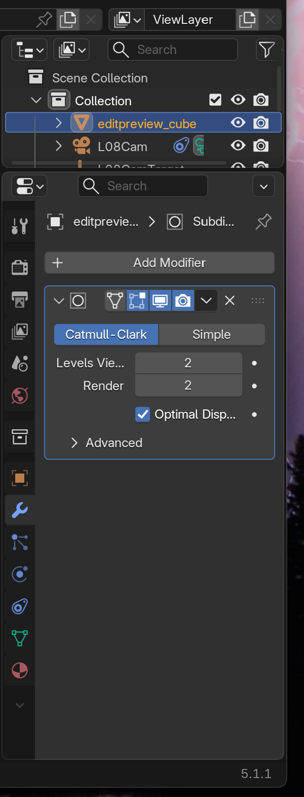
💡 Panel Location Tip: If you don't see the Properties panel on the right side of your screen, you might have hidden it. Press
Nto toggle it on. The Properties panel is the one with all the icons running vertically—look for the wrench icon among them!
The Three-Step Modifier Process
Working with modifiers follows a simple three-step pattern:
Step 1: Adding a Modifier
Let's walk through adding your first modifier:
📝 Adding a Modifier
- Select your object (must be in Object Mode)
- Open Modifier Properties (wrench icon 🔧)
- Click "Add Modifier" button at the top
- A dropdown menu appears with all available modifiers
- Choose the modifier you want (they're organized by category)
- The modifier appears in the panel with its settings
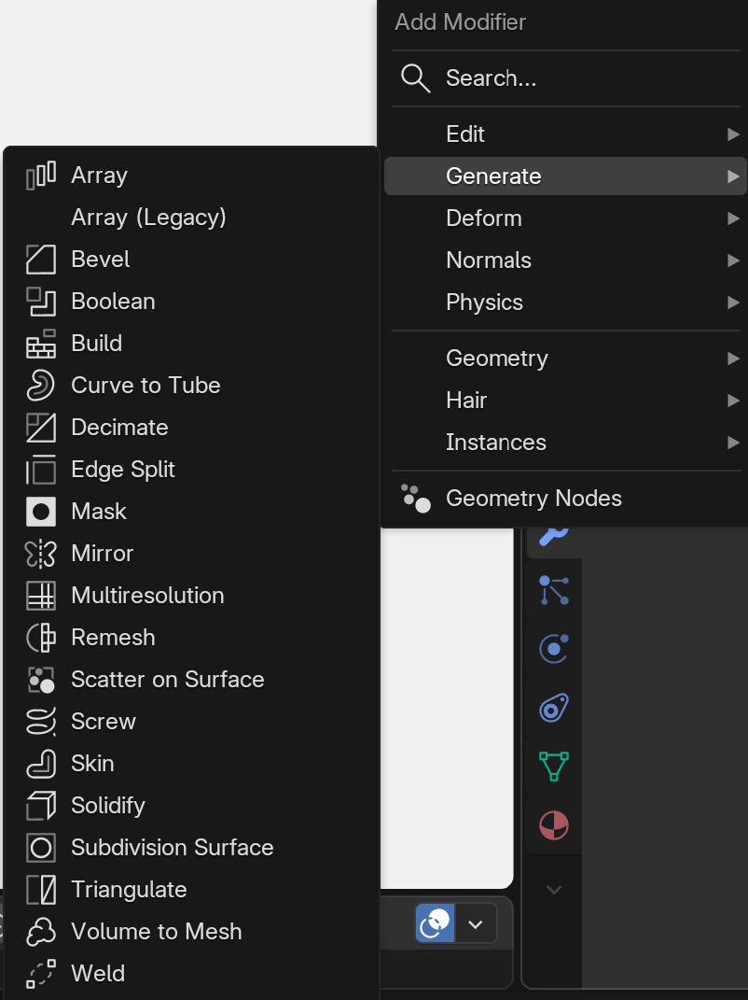
As soon as you add a modifier, it takes effect immediately! You'll see your object change in the viewport (unless the modifier's effect is subtle or you need to adjust settings first).
Step 2: Adjusting Settings
Each modifier has its own unique settings. These appear below the modifier's name in the panel.
🎛️ Common Modifier Controls
- Numerical inputs: Type values or use arrow keys to adjust
- Dropdown menus: Choose from preset options
- Checkboxes: Toggle features on/off
- Object pickers: Select other objects to interact with
- Sliders: Drag to adjust values visually
Don't worry about memorizing what each setting does—we'll explore the most important ones as we use specific modifiers. Plus, hovering your mouse over any setting shows a tooltip explaining what it does!
Step 3: Apply or Keep
After you've adjusted your modifier, you have three main options:
🔄 Modifier Actions
| Action | What It Does | When to Use It |
|---|---|---|
| Keep It Active | Modifier stays live, you can adjust it anytime | When you might want to change settings later |
| Apply | Converts modifier effect into real geometry | When you need to manually edit the results |
| Delete | Removes modifier and its effect | When you don't want the modifier anymore |
🎯 Pro Workflow: Professional 3D artists often keep modifiers active for as long as possible. They only apply them when absolutely necessary—like when they need to export the model or when they must manually edit the generated geometry. This flexibility is one of modifiers' biggest advantages!
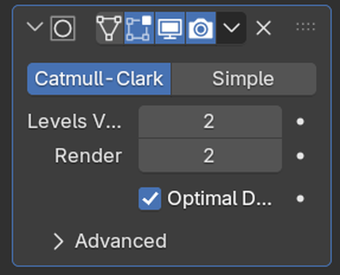
Modifier Panel Icons Explained
When you add a modifier, you'll see several icons at the top of its panel. Here's what they do:
🔍 Modifier Panel Icons
- Camera icon: Show/hide modifier in renders
- Eye icon: Show/hide modifier in viewport
- Monitor icon: Show/hide in viewport (realtime preview)
- Triangle icon: Apply modifier (makes it permanent)
- X icon: Delete modifier
- Arrow icons: Move modifier up/down in the stack (we'll cover this later)
💡 Quick Toggle Tip
The eye icon is incredibly useful during modeling! Click it to temporarily turn off a modifier and see your original geometry. This helps you understand what the modifier is actually doing and troubleshoot problems. It's like a before/after switch!
Viewing Modifier Effects
Understanding how to view modifiers is crucial for effective modeling:
👁️ Modifier Visibility Modes
- Viewport (Wireframe): In Edit Mode, you see the original geometry in orange and the modifier result as a wireframe overlay
- Viewport (Solid): In Object Mode, you see the final result of all modifiers
- Render: What the modifier will look like in final renders
Here's something important: when you enter Edit Mode, you're editing the original geometry, not the modifier's result. The modifier effect appears as a ghosted preview, but you can't directly edit it. This is the "non-destructive" part in action!
Try It Now: Add Your First Modifier
Let's practice the workflow with a simple example:
✅ Quick Practice Exercise
- Start with the default cube (or add one with
Shift+A→ Mesh → Cube) - Make sure you're in Object Mode
- Click the wrench icon in the Properties panel
- Click "Add Modifier"
- Choose "Generate" → "Subdivision Surface"
- Watch your cube become rounded!
- Click the eye icon to toggle the modifier off and on
- Enter Edit Mode (
Tab) and notice the original cube is still there
Result: You should see your blocky cube transformed into a smooth, rounded shape—but the original cube geometry is still intact underneath!
Understanding "Levels" and Settings
Most modifiers have adjustable settings that control their intensity or behavior. For example, the Subdivision Surface modifier you just added has a "Levels Viewport" setting.
🎚️ Setting Types You'll Encounter
- Levels/Iterations: How many times the modifier repeats its operation (higher = more effect)
- Factor/Strength: How intensely the modifier affects your object (0 to 1, or 0% to 100%)
- Count: How many duplicates or divisions to create
- Offset: How far apart elements should be
- Axis: Which direction the modifier operates in (X, Y, or Z)
Don't stress about learning all the settings for every modifier right now. We'll explore the most important ones as we use each modifier in practical examples.
Array Modifier: Duplication Power
The Array modifier is one of the most useful tools in your modeling arsenal. It automatically duplicates your object in a pattern—whether that's a straight line, a circle, or along a custom path. Instead of manually duplicating and positioning objects, you just adjust a few numbers and Blender does the work!
💡 The Copy-Paste Superpower: Imagine if you could press Ctrl+C and Ctrl+V, but instead of pasting just once, you could paste 100 times with perfect spacing in any direction you want—and if you change your mind about the spacing or count, you can adjust it instantly. That's what the Array modifier gives you!
What Can You Do With Array?
The Array modifier is incredibly versatile. Here are just some of the things you can create:
🎨 Array Modifier Use Cases
- Architecture: Windows on a building, fence posts, stairs, floor tiles
- Props: Bookshelves, keyboard keys, chain links, gears
- Nature: Tree trunks in a forest, grass blades, flower petals
- Patterns: Decorative borders, repeated ornaments, texture details
- Mechanical: Screws, bolts, rivets, armor plates
Your First Array: A Simple Fence
Let's create a simple fence to understand how the Array modifier works:
📝 Creating a Fence Post Array
- Start fresh: Delete the default cube (X → Delete)
- Add a cube:
Shift+A→ Mesh → Cube - Scale it into a fence post:
- Press
S,Z,3,Enter(makes it taller) - Press
S,Shift+Z,0.2,Enter(makes it narrower)
- Press
- Open Modifier Properties (wrench icon 🔧)
- Click "Add Modifier" → Generate → Array
- Watch the magic happen! You should instantly see a second fence post appear
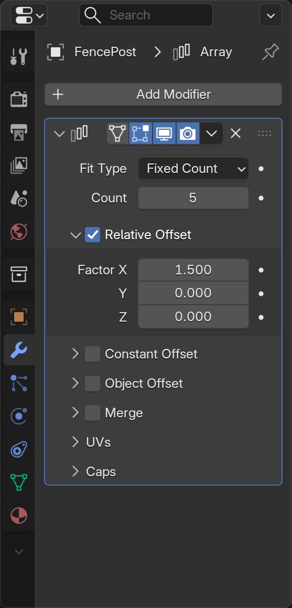
Congratulations! You just created your first array. By default, the Array modifier creates one duplicate (so you see 2 total posts). Now let's learn to control it.
Understanding Array Settings
The Array modifier panel has several settings. Let's explore the most important ones:
🎛️ Key Array Settings
| Setting | What It Does | Example Value |
|---|---|---|
| Count | How many total copies (including original) | 10 = ten fence posts total |
| Relative Offset | Spacing based on object size (1.0 = one object width apart) | X: 1.0 = touching, X: 2.0 = one object gap between |
| Constant Offset | Spacing in exact Blender units | X: 2.0 = 2 units between each copy |
| Object Offset | Use another object to control position/rotation | Advanced - we'll skip for now |
Adjusting the Count
Let's make more fence posts appear:
📝 Increasing the Count
- In the Array modifier panel, find "Count"
- Click in the Count field (it probably says "2")
- Type
10and press Enter - You should now see 10 fence posts in a row!
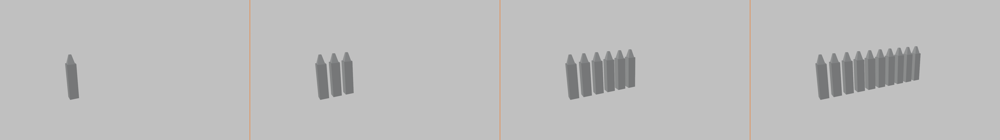
See how easy that was? Imagine doing that manually—you'd have to duplicate and position 9 times. With Array, it's one number change!
Controlling Spacing
By default, the Array modifier uses "Relative Offset" which spaces objects based on their size. The default X value of 1.0 means "one object width apart."
📝 Adjusting Spacing
- Find "Relative Offset" in the Array panel
- Look at the X, Y, Z values (X should be 1.0 by default)
- Try changing X to
1.5 - Notice the fence posts spread further apart
- Try
0.8to make them closer together - Try
2.0to add a big gap between posts
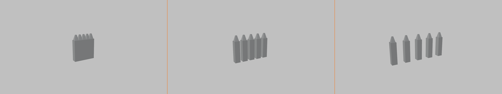
🎯 Understanding Relative Offset: Think of it like this—if your fence post is 0.4 units wide, and you set Relative Offset X to 1.0, the duplicates will be placed 0.4 units apart (one object width). If you set it to 2.0, they'll be 0.8 units apart (two object widths). It's relative to the object's size!
Changing Array Direction
Right now, your fence posts are probably going along the X-axis (left to right). But you can array in any direction:
📝 Arraying in Different Directions
- In Relative Offset, set X to
0.0(turns off X direction) - Set Y to
1.0(turns on Y direction) - Your fence now goes front-to-back instead of left-to-right!
- Try setting Z to
1.0(with X and Y at 0.0) - Now your fence posts stack vertically like a tower!
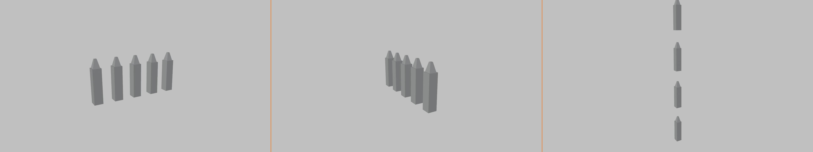
Combining Directions for Grids
Here's where it gets really powerful—you can array in multiple directions at once:
📝 Creating a Grid
- Set Relative Offset X to
1.5 - Set Relative Offset Y to
1.5 - Keep Z at
0.0 - Your fence posts now form a grid!
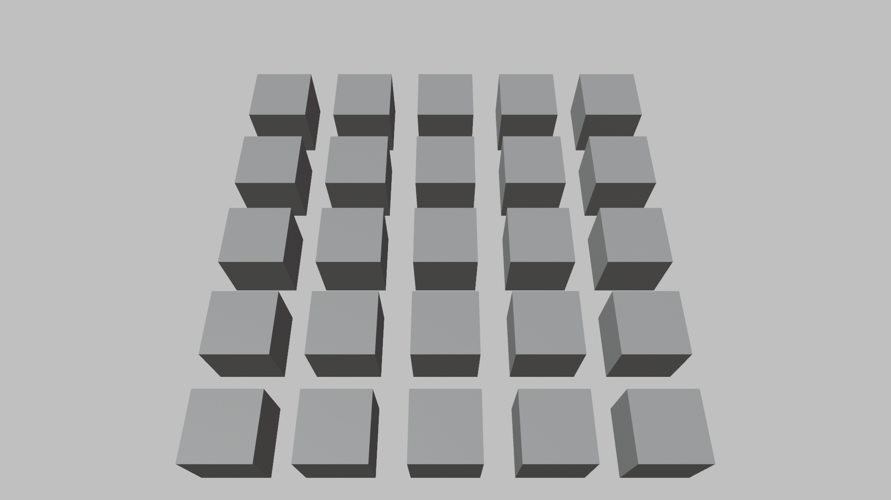
Using Constant Offset Instead
Sometimes you want exact spacing regardless of object size. That's when you use Constant Offset:
📝 Switching to Constant Offset
- Uncheck the "Relative Offset" checkbox (turns it off)
- Check the "Constant Offset" checkbox (turns it on)
- Set Constant Offset X to
2.0 - Now posts are exactly 2 Blender units apart
💡 When to Use Which Offset
- Relative Offset: When you want spacing based on object size (objects touching or with gaps proportional to size)
- Constant Offset: When you need exact measurements (architectural accuracy, real-world dimensions)
- Both Together: You can use both at once for complex patterns!
Practical Array Tips
✅ Array Modifier Best Practices
- Start with low counts: Use 2-3 copies while setting up, increase later (better performance)
- Think about the original: The base object quality matters—all copies will have the same issues
- Use with Mirror: Array + Mirror = powerful combo for symmetric patterns
- Keep it non-destructive: Don't apply the Array unless you absolutely need to edit individual copies
- Check your spacing: Use Constant Offset when exact measurements matter
- Name your objects: "FencePost_Array" is better than "Cube.001"
Mirror Modifier: Perfect Symmetry
The Mirror modifier is a game-changer for creating symmetric objects. Instead of modeling both sides of an object, you model one side and the Mirror modifier automatically creates the other side. This saves time, ensures perfect symmetry, and lets you make changes to both sides by editing just one!
💡 The Reflection Analogy: Imagine putting a mirror next to your object. Whatever you do on one side instantly appears on the other side, perfectly reflected. That's exactly what the Mirror modifier does—except it creates real geometry, not just a visual reflection. It's like having a modeling assistant who perfectly copies everything you do!
Why Mirror Is Essential
Most things in the real world are symmetric—faces, bodies, vehicles, furniture, architecture. Trying to model both sides manually is tedious and error-prone. The Mirror modifier solves this elegantly.
🎨 Perfect Use Cases for Mirror
- Characters: Model one half of a face or body, mirror for perfect symmetry
- Vehicles: Cars, planes, boats—all symmetric from side view
- Props: Vases, bottles, cups—anything with radial or bilateral symmetry
- Architecture: Buildings, doorways, furniture often have symmetric designs
- Creatures: Most animals have bilateral symmetry (left/right mirror)
Your First Mirror: A Simple Vase
Let's create a vase to understand how mirroring works:
📝 Creating a Mirrored Vase
- Start fresh: Delete everything (
Ato select all,X→ Delete) - Add a cube:
Shift+A→ Mesh → Cube - Enter Edit Mode: Press
Tab - Delete half the cube:
- Press
Alt+Ato deselect all - Press
Bfor box select - Drag a box around the right half of the cube
- Press
X→ Delete → Vertices
- Press
- Return to Object Mode: Press
Tab - Add Mirror modifier: Wrench icon → Add Modifier → Generate → Mirror
- Magic! The missing half reappears as a mirror!
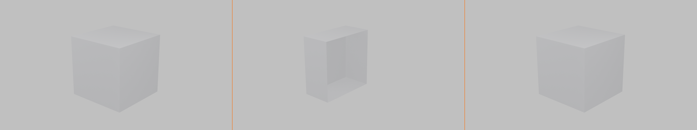
You should now see a complete cube again—but notice that you only have geometry on the left side. The right side is being generated by the Mirror modifier!
Understanding Mirror Settings
The Mirror modifier has several important settings. Let's explore them:
🎛️ Key Mirror Settings
| Setting | What It Does | Common Use |
|---|---|---|
| Axis (X, Y, Z) | Which axis to mirror across | X for left/right, Y for front/back, Z for top/bottom |
| Bisect | Cuts geometry at the mirror plane | Useful for cleanup and precision |
| Flip | Swaps which side is original and which is mirrored | When you modeled the "wrong" side |
| Clipping | Prevents vertices from crossing the mirror line | Critical for seamless center connection |
| Merge | Merges vertices at the mirror line | Creates single seamless geometry |
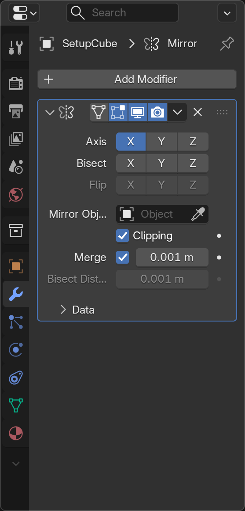
The Clipping Option (Most Important!)
This is the most important setting for the Mirror modifier. Let's see why:
📝 Testing Clipping
- Make sure Mirror modifier is active
- Enter Edit Mode (
Tab) - Select a vertex on the center line
- Try to move it across the center (press
Gand move mouse) - Notice it can pass through—creating a gap or overlap
- Undo (
Ctrl+Z) - In the Mirror modifier panel, check "Clipping"
- Try moving the center vertex again
- Now it "sticks" to the center—can't cross the mirror line!
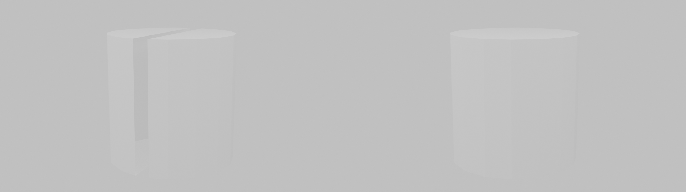
🎯 Why Clipping Matters: Without clipping, you can accidentally create gaps in your model where the two halves meet. With clipping enabled, vertices at the center "snap" to the mirror plane, ensuring your model stays watertight. Always enable this when working with character models or anything that needs to be one continuous piece!
Mirroring on Different Axes
By default, Mirror uses the X-axis (left/right). But you can mirror on any axis:
📝 Changing Mirror Axis
- In the Mirror modifier panel, look at the Axis checkboxes
- Uncheck X (the mirror disappears!)
- Check Y (now it mirrors front/back)
- Try checking both X and Y (mirrors in two directions—creates 4 copies!)
- Try all three axes checked (creates 8 copies—mirrors in all directions!)
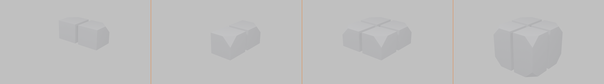
💡 Multi-Axis Mirroring
Mirroring on multiple axes is incredibly powerful:
- X + Y: Model one quarter, get the full object (great for symmetrical props)
- X + Y + Z: Model one eighth, get the full object (perfect for things like gems or decorative elements)
- Just one axis: Most common for characters and vehicles
Warning: With multiple axes, make sure your original geometry is positioned correctly, or the mirrors might not align as expected!
Practical Mirror Workflow
Here's the typical workflow professional artists use with the Mirror modifier:
✅ Professional Mirror Workflow
- Start with a symmetric object in mind
- Delete half (or the appropriate portion) of your mesh
- Add Mirror modifier
- Enable Clipping immediately (prevent gaps)
- Enable Merge if needed (usually yes for seamless geometry)
- Model one side completely while seeing both sides update
- Only apply the modifier when you need to break symmetry or export
Common Mirror Problems and Solutions
⚠️ Troubleshooting Mirror Issues
Problem: Gap at the center seam
- Solution: Enable "Clipping" and "Merge" options
- Make sure vertices at the center are exactly at X=0 (or Y=0, Z=0 depending on axis)
Problem: Mirror appears on wrong side
- Solution: Click "Flip" option to swap sides
- Or delete the geometry on the current side and model the other side instead
Problem: Mirror not appearing at all
- Solution: Check that the correct axis is selected
- Make sure the object's origin is at the center (Object → Set Origin → Origin to Geometry)
Problem: Weird overlapping geometry
- Solution: Your original geometry is crossing the mirror plane
- Enable "Bisect" to cut away geometry on the wrong side
The Origin Point Matters!
The Mirror modifier uses your object's origin point as the center of the mirror. This is crucial to understand:
📝 Setting Up Mirror Origin
- If your mirror seems off-center:
- Go to Object Mode
- Right-click your object
- Choose "Set Origin" → "Origin to Geometry"
- This centers the origin point
- For precise control:
- Press
Shift+S→ "Cursor to World Origin" - Right-click object → "Set Origin" → "Origin to 3D Cursor"
- Now the mirror happens exactly at world center
- Press
Mirror + Edit Mode = Instant Feedback
The real power of Mirror becomes apparent when you're actively modeling:
✅ Try This: Real-Time Mirroring
- With your mirrored object selected, enter Edit Mode
- Select a vertex on one side
- Press
Gand move it around - Watch the opposite side update in real-time!
- Extrude something (
E) and watch both sides change - Add loop cuts (
Ctrl+R) and see them appear on both sides
This instant feedback is why Mirror is so powerful—you're essentially modeling twice as fast!
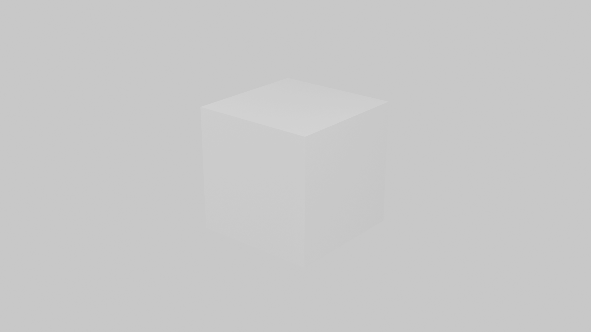
Subdivision Surface: Smooth Elegance
The Subdivision Surface modifier (often called "Subsurf" or "Subdiv") is one of the most important modifiers in 3D modeling. It takes your blocky, low-polygon model and makes it smooth and organic by automatically subdividing the geometry. This is how professional artists create smooth characters, vehicles, and organic forms without manually adding millions of vertices.
💡 The Balloon Analogy: Imagine your blocky model is a deflated balloon made of flat panels. The Subdivision Surface modifier is like inflating that balloon—all the flat edges round out, corners become smooth, and suddenly your angular object looks organic and natural. But here's the magic: you still only need to adjust the simple, low-poly version!
Why Subdivision Surface Is Essential
Most real-world objects aren't made of flat planes and sharp edges—they're smooth and curved. Modeling smooth surfaces by adding tons of vertices manually is tedious and hard to control. Subdivision Surface solves this elegantly.
🎨 Perfect Use Cases for Subdivision Surface
- Characters: Smooth skin, organic body shapes, facial features
- Vehicles: Car bodies with smooth curves and rounded edges
- Organic objects: Fruits, pillows, stuffed animals, anything soft
- Furniture: Rounded chair backs, cushions, smooth table edges
- Props: Bottles, vases, helmets—anything that needs smooth curves
Your First Subdivision: Smooth a Cube
Let's see the dramatic difference Subdivision Surface makes:
📝 Smoothing a Cube
- Start fresh with a cube (delete all,
Shift+A→ Mesh → Cube) - In Object Mode, look at your blocky cube
- Open Modifier Properties (wrench icon 🔧)
- Add Modifier → Generate → Subdivision Surface
- Watch the transformation! Your cube becomes a smooth sphere-like shape
- Enter Edit Mode (
Tab) - Notice the original cube is still there (in orange), with the smooth version as a preview
This is the power of Subdivision Surface—you get smooth, organic results while only editing a simple, manageable cage of vertices!
Understanding Subdivision Levels
The main control for Subdivision Surface is the "Levels" setting. This determines how many times Blender subdivides your geometry:
🎛️ Subdivision Levels Explained
| Level | Geometry Generated | Visual Result | Best Use |
|---|---|---|---|
| 0 | No subdivision | Original blocky mesh | Turning off the effect |
| 1 | Each face becomes 4 faces | Slightly rounded | Hard surface with subtle rounding |
| 2 | Each face becomes 16 faces | Smooth curves | Most common for organic modeling |
| 3 | Each face becomes 64 faces | Very smooth | Close-up renders, final output |
| 4+ | Exponentially more faces | Ultra-smooth | Usually overkill, performance heavy |
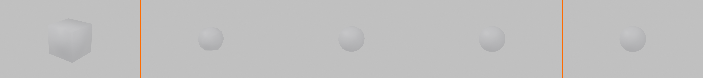
💡 Viewport vs Render Levels
You'll see two level settings in the modifier:
- Levels Viewport: How smooth it looks while you work (keep this low for performance—usually 1 or 2)
- Render: How smooth it looks in final renders (can be higher—usually 2 or 3)
This lets you work fast with a simple preview but render with beautiful smooth results!
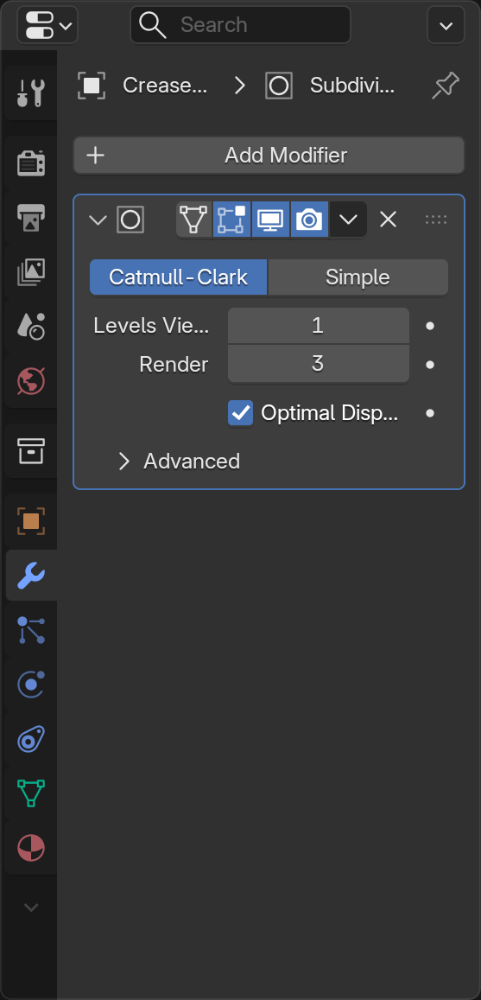
Adjusting Subdivision Levels
📝 Testing Different Levels
- With Subdivision Surface active on your cube
- Find "Levels Viewport" in the modifier panel
- Try setting it to 0 (back to blocky cube)
- Try 1 (slightly rounded)
- Try 2 (smooth sphere-like)
- Try 3 (very smooth—notice it might slow down a bit)
- Set it back to 2 (the sweet spot for most work)
Controlling the Smoothing
Here's where it gets interesting: you can control where your model stays sharp and where it gets smooth. This is done by adding geometry in strategic places:
📝 Creating Sharp Edges with Loop Cuts
- Start with a subdivided cube (Level 2)
- Enter Edit Mode
- Add a loop cut near one edge:
Ctrl+R, position close to an edge, click - Notice that edge becomes sharper!
- Add another loop cut very close to the first one
- Now that edge is even sharper!
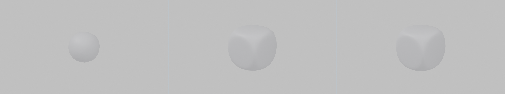
🎯 The Loop Cut Rule: In subdivision modeling, edges stay sharp when you add geometry close together near them. Think of it like this—the closer your loop cuts are to an edge, the sharper that edge will be. This is called "edge flow control" and it's fundamental to professional modeling!
The Crease Tool (Alternative Method)
Sometimes you want a sharp edge without adding extra geometry. That's where edge creasing comes in:
📝 Using Edge Crease
- In Edit Mode with a subdivided object
- Switch to Edge Select Mode (press
2) - Select an edge you want to sharpen
- Press
Shift+E(Edge Crease) - Move your mouse to adjust crease amount
- Type
1and press Enter for full sharpness - The edge becomes sharp without adding geometry!
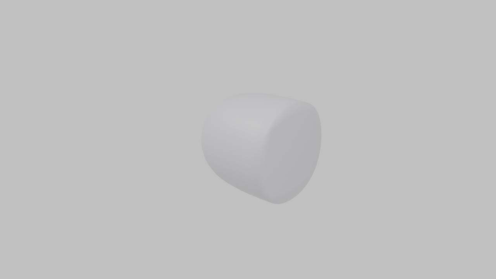
💡 Loop Cuts vs Crease: Which to Use?
- Loop Cuts (Supporting Geometry):
- More control over the exact shape
- Industry standard for professional work
- Works with any workflow
- Can be animated and deformed better
- Edge Crease:
- Faster for simple sharp edges
- Keeps polygon count lower
- Good for quick previews
- May not export properly to other programs
Pro tip: Most professionals prefer loop cuts for important edges and use crease only for temporary or less critical edges.
Subdivision and Shading
Subdivision Surface works best with smooth shading. Let's set that up:
📝 Combining Subdivision with Smooth Shading
- Select your subdivided object
- Make sure you're in Object Mode
- Right-click the object
- Choose "Shade Smooth"
- Now the subdivision looks even better!
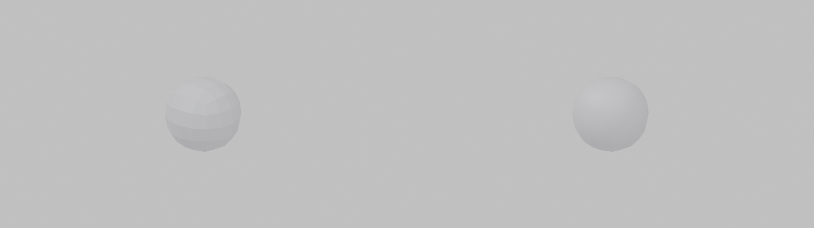
Smooth shading + Subdivision Surface = the standard combo for organic modeling. They work together to create beautiful, smooth surfaces.
Common Subdivision Patterns
Professional modelers use specific patterns to control subdivision. Here are the most important ones:
✅ Essential Subdivision Patterns
- Edge Loops for Sharpness: Two loop cuts close together = sharp edge
- Pole Control: Avoid poles (vertices with 5+ edges) in areas that need to deform
- All Quads: Use 4-sided faces (quads) whenever possible—they subdivide cleanly
- Even Distribution: Try to keep edge lengths roughly similar for smooth results
- Flow Lines: Edge loops should flow around the form naturally, like contour lines on a map
Subdivision Performance Tips
✅ Working Efficiently with Subdivision
- Keep viewport level low: Level 1 or 2 while modeling, increase for final render
- Use simple geometry: Start with low poly, let subdivision do the smoothing
- Optimal Shading toggle: Click the monitor icon in the modifier to toggle viewport visibility
- Don't over-subdivide: Level 2 is enough for most cases; Level 3+ is rarely needed
- Model smart, not dense: Use good edge flow instead of just adding more subdivisions
When NOT to Use Subdivision Surface
Subdivision Surface isn't always the answer. Some objects should stay hard-edged:
🚫 Poor Candidates for Subdivision
- Hard surface objects: Boxes, buildings, mechanical parts (unless you want subtle rounding)
- Low-poly game assets: When you need to maintain exact polygon count
- Flat objects: Walls, floors, simple planes (subdivision won't add value)
- Text and logos: These need crisp edges, not smoothing
Bevel Modifier: Automatic Rounding
The Bevel modifier automatically rounds off edges and corners on your model. In the real world, perfectly sharp edges don't exist—even the sharpest knife has a microscopic rounding. The Bevel modifier adds this realism to your models by creating small beveled edges that catch light realistically.
💡 The Worn Edge Analogy: Think about a brand new wooden table versus one that's been used for years. The new table has sharp corners, but the old one has slightly rounded edges from wear and tear. The Bevel modifier instantly gives your 3D models that realistic, worn-in quality—or you can use it for intentionally rounded, soft-edged designs.
Why Bevel Makes Models Look Real
Sharp edges are one of the telltale signs of "fake" 3D models. Real objects always have some edge rounding, even if it's tiny. Bevel fixes this instantly.
🎨 Perfect Use Cases for Bevel
- Hard surface models: Robots, machines, vehicles—anything mechanical
- Architecture: Building edges, window frames, door frames
- Product design: Phones, laptops, appliances, furniture
- Props: Boxes, containers, weapons, tools
- Lighting enhancement: Beveled edges catch light, adding visual interest
Your First Bevel: Rounding a Cube
📝 Beveling a Cube
- Start fresh with a cube (delete all,
Shift+A→ Mesh → Cube) - In Object Mode
- Open Modifier Properties (wrench icon 🔧)
- Add Modifier → Generate → Bevel
- Notice the edges and corners are now rounded!
- Try rotating your view to see how the bevels catch the light
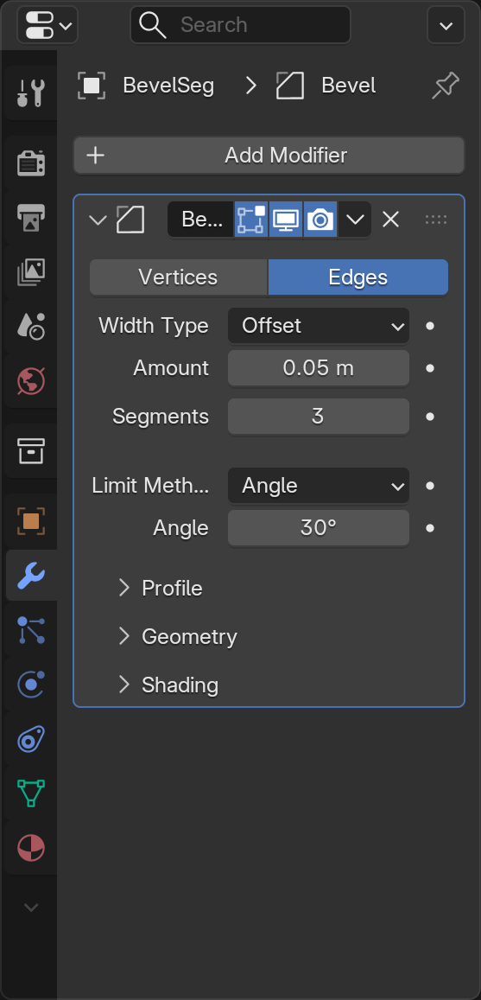
With just one click, your boring cube now has realistic rounded edges. But we can control exactly how rounded they are!
Understanding Bevel Settings
🎛️ Key Bevel Settings
| Setting | What It Does | Typical Values |
|---|---|---|
| Amount | How far the bevel extends from the edge | 0.01-0.1 for subtle, 0.1-0.5 for pronounced |
| Segments | How many cuts create the bevel (higher = smoother) | 2-3 for hard edges, 4-8 for smooth curves |
| Limit Method | Which edges to bevel (Angle, Weight, None) | Angle for automatic, Weight for manual control |
| Angle | Only bevel edges sharper than this angle | 30° for all edges, 80° for only sharp corners |
Adjusting Bevel Amount
📝 Changing Bevel Size
- In the Bevel modifier panel, find "Amount"
- Try setting it to
0.01(very subtle rounding) - Try
0.05(moderate rounding) - Try
0.2(heavy rounding) - Notice how it changes the character of your object!
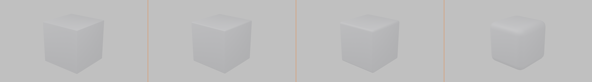
🎯 Real-World Sizing: In real life, most manufactured objects have bevels between 1-3mm. In Blender units (assuming 1 unit = 1 meter), that's 0.001-0.003. For most models, 0.01-0.05 looks realistic. Larger bevels (0.1+) create a deliberately soft, rounded look—which can be stylistic or functional depending on your design.
Controlling Segments
The Segments setting controls how smooth your bevel is:
📝 Testing Segment Counts
- Set Bevel Amount to
0.1(so you can see the effect clearly) - Set Segments to
1(creates a chamfer—a flat angled cut) - Set Segments to
2(slightly rounded) - Set Segments to
4(smooth rounding) - Set Segments to
8(very smooth, but more geometry)
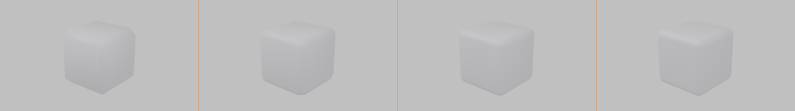
💡 Segments vs Performance
More segments = smoother bevels but also more geometry. Guidelines:
- 1 segment: Chamfers (flat angled cuts), mechanical look
- 2-3 segments: Subtle rounding, good for most hard surface models
- 4-6 segments: Smooth curves, good for visible bevels
- 8+ segments: Very smooth, only use for close-up hero objects
Remember: Every segment multiplies your polygon count, so use only what you need!
Angle Limiting
By default, Bevel affects all edges. But sometimes you only want to bevel sharp corners, not gentle curves. That's where angle limiting comes in:
📝 Using Angle Limiting
- In the Bevel modifier, find "Limit Method"
- Set it to "Angle" (if it isn't already)
- Look at the "Angle" setting below (default is usually 30°)
- Set it to
30(bevels all edges) - Set it to
60(only bevels sharper edges) - Set it to
89(only bevels very sharp corners)
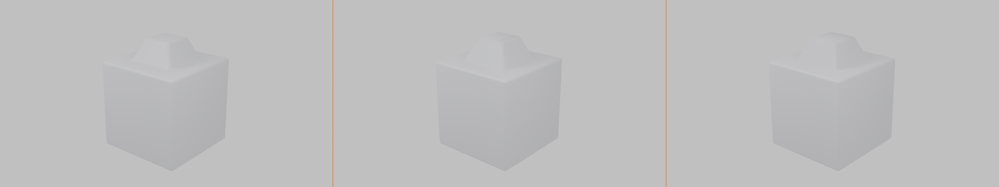
This is incredibly useful for complex models where you want to bevel only specific edges without manually selecting them.
Bevel + Subdivision Surface
Here's a powerful combo: use Bevel with Subdivision Surface for the best of both worlds:
📝 Combining Bevel and Subdivision
- Start with your beveled cube
- Add another modifier: Subdivision Surface
- Notice how the entire cube becomes rounded!
- Adjust the Bevel amount and segments
- Then adjust Subdivision level
- You get precise control over edge sharpness AND overall smoothness!
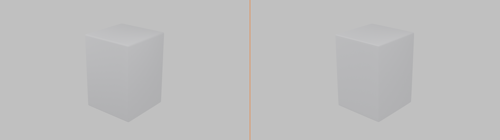
🎯 Why This Combo Works: Bevel controls the edges precisely while Subdivision smooths the overall form. Professional hard-surface modelers use this combination constantly. The bevel keeps edges crisp where needed, while subdivision smooths everything else. It's like having fine-grained and broad-brush control at the same time!
Manual Bevel Weight Control
For ultimate control, you can manually set which edges get beveled:
📝 Using Bevel Weight
- Enter Edit Mode
- Switch to Edge Select Mode (press
2) - Select specific edges you want beveled
- In the Item panel (press
Nif hidden), find "Mean Bevel Weight" - Set it to
1.0for full bevel on selected edges - In the Bevel modifier, set Limit Method to "Weight"
- Now only edges with bevel weight are affected!
This gives you surgical precision—bevel only exactly the edges you choose, with individual control over each one.
Common Bevel Issues
⚠️ Troubleshooting Bevel Problems
Problem: Bevel looks jagged or faceted
- Solution: Increase the Segments value
- Make sure "Shade Smooth" is enabled in Object Mode
Problem: Bevel is too small to see
- Solution: Increase the Amount value
- Check your object scale—apply scale with
Ctrl+A→ Scale
Problem: Bevel creates weird overlapping geometry
- Solution: Amount is too large for the edge length
- Reduce the Amount or enable "Clamp Overlap" in Bevel settings
Problem: Only some edges are beveling
- Solution: Check the Angle setting—lower it to affect more edges
- Or change Limit Method to "None" to bevel all edges
Bevel Best Practices
✅ Professional Bevel Tips
- Keep it subtle: Real-world bevels are usually tiny (0.01-0.05)
- Match your style: Hard-edge models need small bevels; soft models can have larger ones
- Use segments wisely: 2-3 is enough for most applications
- Apply object scale: If bevels look wrong,
Ctrl+A→ Scale to fix - Combine with other modifiers: Bevel + Subdivision + Mirror = powerful workflow
- Use for lighting: Even invisible bevels catch light and add realism
Modifier Stacking and Order
Here's where modifiers become truly powerful: you can apply multiple modifiers to the same object, and they work together in a stack. But here's the catch—the order matters! The same modifiers in different orders can produce completely different results.
💡 The Recipe Analogy: Think about baking a cake. If you mix ingredients, then bake, then add frosting, you get a cake. But if you try to add frosting, then bake, then mix ingredients—you get a disaster! Modifier order works the same way. Each modifier processes the result of the previous one, so order is critical.
Understanding the Modifier Stack
When you have multiple modifiers on an object, Blender applies them from top to bottom. The first modifier processes your original geometry, the second modifier processes the result of the first, and so on.
📊 How the Stack Works
Imagine this modifier stack:
- Mirror → Creates symmetric geometry
- Array → Duplicates the mirrored result
- Bevel → Rounds edges on all the duplicates
- Subdivision Surface → Smooths everything
Each step builds on the previous one. Change the order, and you get a completely different result!
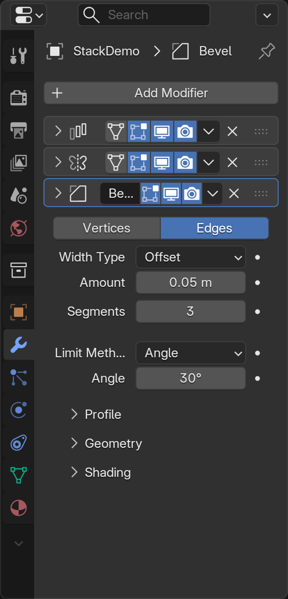
Reordering Modifiers
📝 Moving Modifiers in the Stack
- Look at the modifier panel
- Each modifier has up/down arrow icons at the top right
- Click the up arrow to move a modifier higher in the stack
- Click the down arrow to move it lower
- Watch how your object changes as you reorder!
Common Modifier Stack Patterns
Professional 3D artists use certain modifier combinations repeatedly. Here are the most common patterns:
✅ Proven Modifier Stack Combinations
Pattern 1: Symmetric Smoothing
- Mirror (create symmetry)
- Subdivision Surface (smooth everything)
Use for: Characters, organic props, symmetric objects
Pattern 2: Hard Surface Polish
- Mirror (symmetry)
- Bevel (round edges)
- Subdivision Surface (overall smoothing)
Use for: Robots, vehicles, mechanical parts
Pattern 3: Array Pattern
- Bevel or Subdivision (shape individual element)
- Array (duplicate the finished element)
Use for: Fences, windows, repeated architectural details
Pattern 4: Symmetric Array
- Mirror (create base symmetric shape)
- Array (duplicate it)
- Bevel or Subdivision (polish the result)
Use for: Railings, columns, decorative patterns
Why Order Matters: A Practical Example
📝 Testing Modifier Order
- Start with a cube, delete half (right side)
- Add Mirror modifier (now you have a full cube again)
- Add Array modifier with Count = 3
- You should see 3 complete cubes in a row
- Now move Array ABOVE Mirror in the stack
- Watch what happens! Now you get 3 half-cubes, then mirrored
🎯 Understanding the Difference:
- Mirror → Array: Create full object, then duplicate it → 3 complete cubes
- Array → Mirror: Duplicate half object, then mirror → 1 cube split into sections
Same modifiers, different order, completely different results!
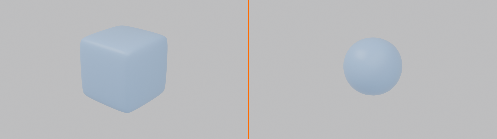
The Golden Rule: Deform Last
A key principle in modifier stacking: generate geometry first, deform it last.
📋 Modifier Order Guidelines
| Stage | Modifier Types | Examples |
|---|---|---|
| 1. Generate Structure | Create or multiply geometry | Mirror, Array |
| 2. Refine Shape | Add detail or smoothing | Bevel, Subdivision Surface |
| 3. Deform | Bend, twist, or reshape | Bend, Wave, Lattice, Simple Deform |
Subdivision Surface Placement
Subdivision Surface is usually placed near the end of the stack, but there are exceptions:
💡 Where to Put Subdivision Surface
- After Mirror: Yes! This is the standard pattern—mirror first, then smooth
- After Array: Usually yes, but depends on desired effect
- After Bevel: Usually yes—bevel creates the edges, subdivision smooths them
- Before Mirror: Rarely, only if you want the mirrored geometry to be blocky
- Before Array: Sometimes, if you want each array element smooth but separated
Managing Complex Stacks
As your models get more complex, modifier stacks can get long. Here's how to stay organized:
✅ Stack Management Tips
- Use the eye icon: Temporarily disable modifiers to see what each one does
- Work bottom-up: When troubleshooting, disable top modifiers first
- Test order early: Don't wait until you have 10 modifiers to check order
- Keep it simple: More modifiers = slower performance. Use only what you need
- Group logically: Keep related modifiers together (e.g., all generation, then all deformation)
- Collapse panels: Click modifier name to collapse/expand panels for cleaner view
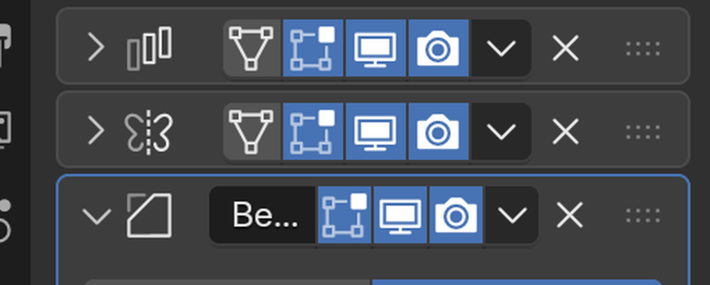
Performance Considerations
Each modifier adds computational cost. Here's how to keep things running smoothly:
⚡ Performance Optimization
- Use viewport icons: Disable heavy modifiers in viewport, keep them for render
- Reduce subdivision levels: Level 1 for viewport, Level 2-3 for render
- Limit array counts: Lower count while working, increase for final result
- Apply when done: If you're sure you won't change it, apply to reduce overhead
- Use instances: For many identical objects, use instancing instead of individual modifiers
When to Apply Modifiers
Remember, applying a modifier makes it permanent. Here's when you should (and shouldn't) apply:
📋 To Apply or Not to Apply?
| Situation | Apply? | Reason |
|---|---|---|
| Still modeling and iterating | ❌ No | Keep flexibility to adjust |
| Need to manually edit generated geometry | ✅ Yes | Can't edit modifier results directly |
| Exporting to another program | ✅ Yes | Other programs don't understand modifiers |
| Performance is suffering | ✅ Maybe | Bake geometry to improve speed |
| Ready for final render | ❌ No | Modifiers work fine in renders |
| Need to break symmetry | ✅ Yes | Apply Mirror to edit sides independently |
⚠️ Before Applying: Always Duplicate!
Before applying any modifier, duplicate your object first:
- Select your object
- Press
Shift+Dto duplicate - Press
Esc(duplicates in place) - Press
Hto hide the duplicate (it's your backup) - Now apply modifiers to the visible object
- If something goes wrong, unhide with
Alt+Hand delete the failed attempt
This safety net has saved countless hours of rework!
Project: Decorative Fence
Now it's time to put everything together! You're going to create a decorative fence that uses multiple modifiers working together. This project will reinforce everything you've learned and show you how powerful modifier stacking can be.
🎯 Project Goals
- Primary Goal: Create a decorative fence using Array and other modifiers
- Secondary Goal: Practice modifier stacking and order
- Learning Goal: Understand how modifiers work together
- Bonus Goal: Experiment with different combinations
⏱️ Estimated Time: 20-30 minutes
Project Overview
You'll create a fence post with decorative details, then use modifiers to:
- Make it symmetric (Mirror)
- Duplicate it into a fence line (Array)
- Round the edges (Bevel)
- Smooth the overall form (Subdivision Surface)
Step-by-Step: Building the Fence
📝 Phase 1: Create the Base Post
- Start fresh: Delete all objects (
Ato select all,X→ Delete) - Add a cube:
Shift+A→ Mesh → Cube - Scale it into a post shape:
S,Z,4,Enter(tall)S,Shift+Z,0.15,Enter(narrow)
- Save your file:
Ctrl+S→ "DecorativeFence_Project.blend"
📝 Phase 2: Add Decorative Top
- Enter Edit Mode:
Tab - Switch to Face Select: Press
3 - Select the top face
- Inset it:
I, move mouse slightly inward, click - Extrude up:
E,Z,0.3,Enter - Scale it smaller:
S,0.7,Enter - Return to Object Mode:
Tab
Now you have a basic fence post with a decorative pointed top. Let's add modifiers!
📝 Phase 3: Apply Mirror (Optional Symmetry)
- Enter Edit Mode
- Delete half the post:
Alt+Ato deselectBfor box select- Select right half
X→ Vertices
- Return to Object Mode
- Add Mirror modifier: Wrench icon → Generate → Mirror
- Enable Clipping and Merge in the modifier
- Your post is symmetric again!
📝 Phase 4: Add Array
- Add Array modifier: Add Modifier → Generate → Array
- Set Count to
8(creates 8 fence posts) - Adjust spacing: Set Relative Offset X to
1.8 - You now have a fence line!
📝 Phase 5: Add Bevel
- Add Bevel modifier: Add Modifier → Generate → Bevel
- Set Amount to
0.02 - Set Segments to
2 - Notice all edges become slightly rounded!
📝 Phase 6: Add Subdivision Surface
- Add Subdivision Surface modifier: Add Modifier → Generate → Subdivision Surface
- Set Levels Viewport to
1 - Your fence is now smooth!
- Apply Shade Smooth: Right-click → Shade Smooth
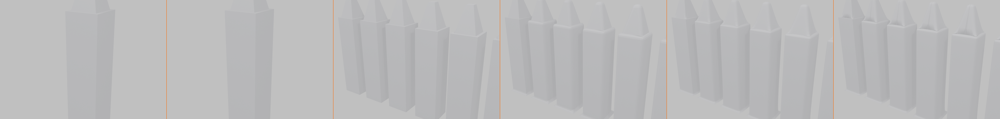
Understanding Your Modifier Stack
Look at your modifier stack from top to bottom. You should see:
🔍 Your Modifier Stack Explained
- Mirror: Creates symmetry from your half-post
- Array: Duplicates the symmetric post 8 times
- Bevel: Rounds edges on all 8 posts
- Subdivision Surface: Smooths everything
Each modifier builds on the previous one's result!
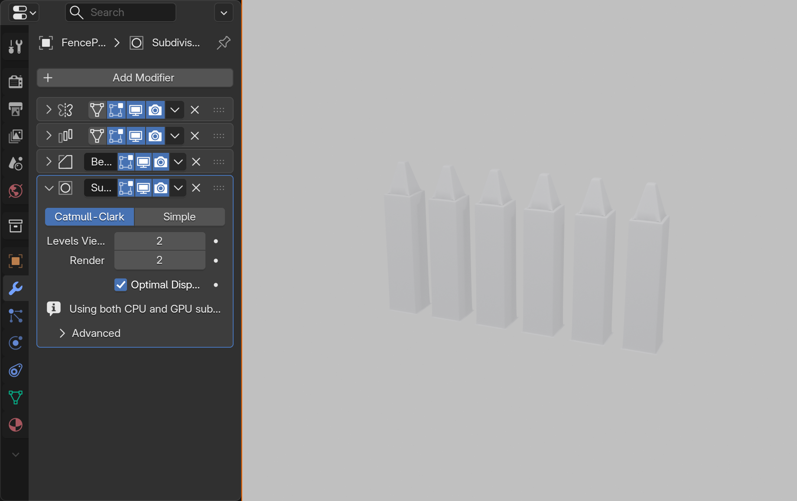
Experiment: Change the Order
✅ Try This: Reorder Modifiers
- Move Subdivision Surface above Array (use up arrow)
- What happens? Posts are smooth, but you can see the segments
- Move it back below Array
- Move Bevel above Array
- What changes? The bevel pattern is different
- Experiment with different orders to see various results
This hands-on experimentation teaches you more than just reading!
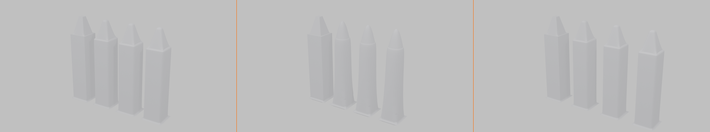
Customization Ideas
Now that you have the basic fence, let's make it your own:
🎨 Customization Options
- More posts: Increase Array count to 12 or 20
- Wider spacing: Increase Relative Offset to 2.5 or 3.0
- Rounder posts: Increase Subdivision to Level 2
- Sharper bevel: Reduce Bevel Amount to 0.01
- Different top: Edit Mode → Change the decorative top shape
- Add a crossbar: Add another cube, scale it flat and long, position across posts
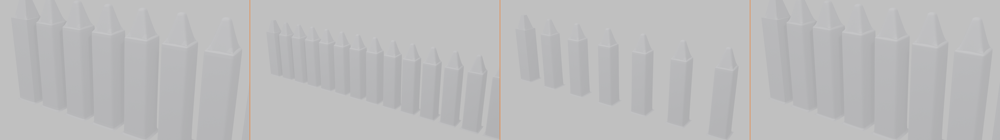
Bonus Challenges
Ready to take it further? Try these advanced variations:
🏆 Challenge 1: Add Horizontal Rails
- Add a new cube
- Scale it long and flat (
S,X,10, thenS,Y,0.1) - Position it across your posts
- Add Array modifier to match post spacing
- You now have a complete fence with rails!
🏆 Challenge 2: Curved Fence
- Add an Empty (
Shift+A→ Empty → Arrows) - In your Array modifier, change to "Object Offset"
- Select the Empty in the Object Offset field
- Rotate the Empty slightly (
R,Z,5) - Your fence now curves!
🏆 Challenge 3: Ornate Design
- Add more decorative elements to the post in Edit Mode
- Try adding spheres or other shapes that merge with the post
- Use the Mirror modifier to keep it symmetric
- Watch how Array duplicates your ornate design
Success Checklist
✅ Your Project is Complete When:
- You have a fence with multiple posts (at least 6-8)
- Posts are symmetric if using Mirror
- Posts are evenly spaced
- Edges are rounded (Bevel is visible)
- Overall form is smooth (Subdivision Surface active)
- You understand what each modifier does
- You've experimented with modifier order
- You've customized at least one aspect
Troubleshooting Common Issues
⚠️ If Something Goes Wrong
Posts overlapping or too close:
- Increase Array Relative Offset X value
Mirror creates weird shapes:
- Check that your object origin is centered
- Enable Clipping in Mirror modifier
Bevel too small to see:
- Increase Bevel Amount
- Apply object scale:
Ctrl+A→ Scale
Subdivision makes it look bloated:
- Reduce Subdivision level to 1
- Or add supporting edge loops in Edit Mode
What You've Accomplished
Take a moment to appreciate what you've created! You started with a simple cube and used modifier stacking to create a complete, professional-looking fence. You've:
- ✅ Used four different modifiers together
- ✅ Understood how modifier order affects results
- ✅ Created complex geometry from simple shapes
- ✅ Learned a workflow used by professionals daily
- ✅ Built something that would take hours to create manually
🎉 Congratulations! You've just scratched the surface of what modifiers can do. The techniques you learned here—stacking modifiers, understanding order, and non-destructive workflow—will serve you for every project you create in Blender. This is how the pros work!
Lesson Summary and Next Steps
You've just learned one of Blender's most powerful features—modifiers! Let's review what you've accomplished and look ahead to how you'll use these tools in your future projects.
What You've Mastered
🎓 Key Skills Acquired
- Modifier Fundamentals: Understanding non-destructive workflows and the modifier panel
- Array Modifier: Duplicating objects in patterns with precise control
- Mirror Modifier: Creating perfect symmetry with real-time editing
- Subdivision Surface: Smoothing geometry elegantly without manual work
- Bevel Modifier: Adding realistic edge rounding automatically
- Modifier Stacking: Combining modifiers and understanding order importance
- Professional Workflow: When to apply, when to keep modifiers live
The Bigger Picture
Modifiers are fundamental to professional 3D workflows. Now that you understand these four essential modifiers, you can:
🎨 What You Can Create Now
| Project Type | Modifiers Used | Example |
|---|---|---|
| Characters | Mirror + Subdivision Surface | Symmetric faces and bodies with smooth organic forms |
| Vehicles | Mirror + Bevel + Subdivision | Cars, planes with realistic edges and symmetry |
| Architecture | Array + Bevel | Windows, columns, repeated elements |
| Props | All modifiers combined | Furniture, containers, decorative objects |
| Environments | Array + Mirror | Forests, crowds, repeated environmental details |
Key Takeaways
✅ Remember These Core Principles
- Non-Destructive is Powerful: Keep modifiers live as long as possible for maximum flexibility
- Order Matters: The same modifiers in different orders produce different results
- Generate First, Deform Last: Build structure, then refine, then deform
- Start Simple: Add modifiers one at a time, test each before adding the next
- Use the Eye Icon: Toggle modifiers off to understand what each one does
- Backup Before Applying: Duplicate your object before making modifiers permanent
Common Questions Answered
❓ "When should I use modifiers vs. manual modeling?"
Answer: Use modifiers for:
- Repetitive tasks (arrays, patterns)
- Symmetry (mirrors)
- Smoothing (subdivision)
- Edge refinement (bevel)
Use manual modeling for:
- Unique, asymmetric details
- Organic sculpting
- Fine-tuning specific areas
Best practice: Use both together! Modifiers for the heavy lifting, manual editing for the details.
❓ "My modifier stack has 10+ modifiers. Is that too many?"
Answer: Not necessarily! Complex models often need many modifiers. However:
- Keep viewport subdivision levels low (1-2)
- Use the monitor icon to disable heavy modifiers during work
- Consider applying some modifiers if performance suffers
- Organize logically—group similar modifiers together
❓ "Can I use modifiers on any mesh?"
Answer: Yes! Modifiers work on any mesh object. However:
- Clean topology gives better results (quads, even edge flow)
- Some modifiers work better with certain geometry types
- Always start with good base geometry for best results
Beyond This Lesson
You've learned the four most essential modifiers, but Blender has many more! Here are some you might explore next:
🔮 Other Useful Modifiers to Explore
- Solidify: Adds thickness to surfaces (great for walls, cloth)
- Boolean: Combines objects through addition, subtraction, intersection
- Skin: Converts edges into 3D geometry automatically
- Curve: Bends objects along a curve path
- Lattice: Deforms geometry with a controllable cage
- Shrinkwrap: Projects one mesh onto another
Once you're comfortable with the basics, these advanced modifiers open up even more possibilities!
Practice Recommendations
The best way to master modifiers is through practice. Here are some exercises to try:
📚 Suggested Practice Projects
- Model a simple chair: Use Mirror for symmetry, Bevel for edges (30 mins)
- Create a picket fence: Expand your project fence with variations (45 mins)
- Build a simple robot: Practice Mirror + Bevel + Subdivision (1 hour)
- Make a bookshelf: Use Array for shelves, Bevel for realistic edges (45 mins)
- Create decorative tiles: Use Mirror + Array for patterns (30 mins)
- Model a vase: Practice Subdivision Surface for organic curves (45 mins)
Goal: Don't aim for perfection—aim for understanding. Try different modifier combinations and see what happens!
Your Modifier Workflow Checklist
Use this checklist for any future project using modifiers:
✅ Professional Modifier Workflow
- ☐ Start with clean, simple base geometry
- ☐ Plan which modifiers you'll need before starting
- ☐ Add modifiers one at a time
- ☐ Test each modifier before adding the next
- ☐ Keep viewport levels low for performance (Subdivision: 1-2)
- ☐ Use the eye icon to toggle modifiers on/off for testing
- ☐ Organize stack logically (generate → refine → deform)
- ☐ Save frequently with modifier stack intact
- ☐ Duplicate before applying any modifiers
- ☐ Only apply when absolutely necessary
Coming Up Next
In the next lesson, we'll explore Precision Modeling Techniques—learning how to model with exact measurements, snap to grids, and create perfectly aligned geometry. This will take your modeling to the next level of professionalism!
🔮 Lesson 9 Preview: Precision Modeling
You'll learn:
- Using exact measurements and dimensions
- Snapping tools for perfect alignment
- Creating technical/architectural models
- Working with real-world scale
- Professional precision techniques
Final Thoughts
Modifiers are one of those features that separate beginners from intermediate users. You've now crossed that threshold! The non-destructive workflow you've learned here will serve you throughout your entire 3D journey.
🎯 A Word from the Pros: In professional studios, modifier stacks are everywhere. Character artists use Mirror and Subdivision Surface religiously. Hard surface artists live in Bevel and Array. Environment artists create entire forests and cities with clever modifier combinations. You're now using the same tools the professionals use every day!
🎉 Congratulations!
You've completed Lesson 8: Modifiers Introduction!
You've learned how to work smarter, not harder. Modifiers automate complex tasks, maintain flexibility, and speed up your workflow dramatically. The techniques you learned today will be used in virtually every project you create from now on.
Keep experimenting, stay curious, and enjoy the power of modifiers!